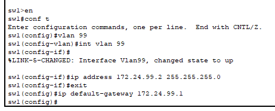
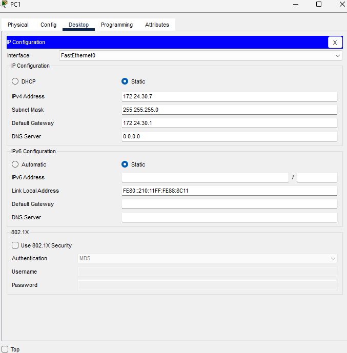
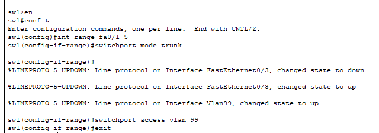

For making this lab we first make use of the structured cabling activity from previos class to serve as a base for the lab


now that we are here we then start in maiking the logical toplogy to due this we use the devices listed as in PC 1-6 swtitches 1-3 and router 1 to connect the diffrent racks we make use of the the patch panels of interconecion to connect the switches together aswell as the pcs


at this step we now move to the first step is to assign ip addresses to each of the devices on the network and use do it acording to the ips listed above how this is done is diffrent between the 2 devices with the pc is is simply go to the dextop->ipconfiguration tab and then put in the details (see below image) for switches its diffrent. the first step is to go to the command line interface in there we then put the command "enable" and the the command "configure terminal" this now allows us to edit the properties of the switch. we then put the command "vlan 99" so now we switch to the vlan portion and then put "interfate/int vlan 99" so now we are directly editing the vlan 99 we then put "ip address" which we then put the asigned ip and the subnet mask we can then use the command "exit" and use the command "ip default-gateway" to set the gateway and it is now set to later verify we just put "show vlan" and itll appear
 after this we now need to setup the other vlan on the switch how its done is quite simple as we simply have to do what we did before and use the code "vlan x" x bieng the vlan we are going to do after that we use "name" and then asign a name to the vlan. now that we have that we then use then assign the switch ports according to the table to due this we enter the "configure terminal" we then use the command "interface range fa/x-x" x being the number of the port after that we use the command "switchport mode trunk/access" this sets what sort of role the port uses. the next one we use is "switchport access vlan" where we then assign it to a vlan
